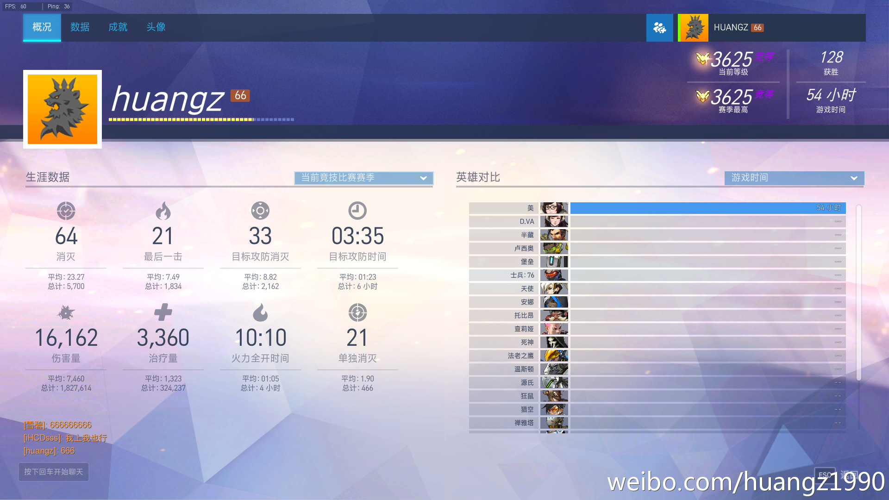

守望先锋小美对抗突击英雄的经验分享，另附突击英雄对抗小美的 tips¶
自我介绍¶
本人是从公测的时候开始玩守望的，很喜欢小美，基本上都是玩小美多，但是因为上一个版本小美表现比较疲软，所以玩到 200 级左右就很少上线了。
不过前阵子听说小美加强了，就建了个新号专门玩小美，25 级之后就只打竞技了，一直都是单排，连组队都没有过（笑），定级黄金，最高打到 3600+ ，现在稳定在 3500+ ，具体数据见下图。
因为在论坛上看到其他玩家写的小美帖子，觉得很有趣，所以也想和大家分享一下自己玩小美的经验。
今天要介绍的是关于小美在 1v1 的情况下，对抗各个突击英雄（源氏、麦克雷、法鸡、死神、76、猎空和黑影）的方法，另外也会顺便讲讲我觉得这些英雄应该怎样打小美，希望大家会感兴趣。
本人水平有限，希望大家不要见笑，也请各位多多指教。

小美 vs 源氏¶
远程¶
远距离的话，就是小美的冰锥和源氏飞镖斗法，看谁准。 虽然冰锥和飞镖的都是有延时的，但是因为小美的血量比源氏要高，而且冰锥的伤害也比飞镖要高，所以互相对射小美一般都是不怕源氏的。
近战¶
近身白刃战的时候，小美要做的就是冻住源氏然后右键冰锥爆头，而源氏要做的则是在不被冻住的情况下，不断地消耗小美的血直至把她杀死。 在近战的过程中，为了不被冻住，源氏通常会不断地跳跃和左右移动，所以小美的水枪越沾人，在近战的时候就越有优势。 这个没有什么好说的，多练习水枪，并且把鼠标调整到一个适合自己的 DPI 上，水枪喷人的效率就会有相应的提高。
当源氏察觉到自己快要被冻住的时候，一般都会用“闪”逃跑，这时会出现两种情况：
如果源氏闪远了，不在水枪的攻击范围之内，那么就对着源氏的背后放冰锥，尝试击杀他。
如果源氏还在水枪的攻击范围之内，那么就继续用水枪喷他。源氏在交了“闪”之后就缺少了快速位移的方法，在小美面前就会变得非常脆弱，这时小美就要抓紧时间，争取在源氏的“闪”恢复之前，将其冻住并击杀。
此外，因为源氏交“闪”之后通常会出现在小美的背后，所以鼠标的 180 度转向练习也是很重要的。
注意地形¶
小美跟源氏近战的时候另一个需要注意的地方就是地形：
地形开阔、周边没有墙壁和建筑物的地方对小美是有利的，因为在开阔的场景中，源氏一旦在近战中失利，即使用“闪”逃跑也可能会被小美在背后用冰锥击中，又或者因为找不到掩体躲藏而被追击而来的小美冻住并杀死。
与此相反，在墙壁和建筑物很多的地方，源氏可以通过爬墙跑酷和“闪”不断地消耗小美的 HP ，甚至在交了“闪”之后还有可能通过爬墙在低 HP 的情况下逃走，因此这类场景对于小美击杀源氏来说将是一大障碍。
大招¶
源氏的龙刃剑通常只需要两刀就可以把小美砍翻在地，但是因为小美有冰箱可以自保，所以一般来说小美都不会直接被龙刃剑砍死，而源氏的 40 米大砍刀对于其他没有自保技能的队友却是致命的。
因此小美在源氏拔刀并向自己砍来的时候，可以不必立即打开冰箱，而是等源氏在砍完了第一刀并且即将要砍下致命的第二刀时，再打开冰箱进行自救。 这样做导致的结果就是，源氏挥出了两刀，但是却没有击杀到我方的任何人员，当源氏砍完第二刀再转向我方其他人员的时候，龙刃剑的时间已经消耗了一部分了。
这种方法虽然不能完全杜绝源氏拔刀对我方的伤害，但是却可以以小美自身作为诱饵，尽可能地减少龙刃剑的有效时间。
源氏打小美 tips¶
注意利用地形，通过跑酷在不被冻住的情况下持续地消耗小美的 HP ，除非有 100% 的把握，不要把“闪”用在击杀小美上面，而是要保留“闪”作为逃命用途，一旦感觉自己要被冻住，马上“闪”走，或者通过爬墙逃之夭夭。
在拔刀的时候不要砍小美，而是应该把注意力放在其他更有价值的目标上，因为小美一旦打开冰箱，源氏之前砍的伤害基本上就白费了。
小美 vs 麦克雷¶
远程¶
因为小美的冰锥是延时的，而麦克雷的枪是瞬发的，所以在枪法相差无几的情况下，小美和麦克雷对射是处于劣势的，因此不推荐小美和麦克雷远程对射。
近身¶
虽然麦克雷远程对小美有优势，但小美近身的时候对麦克雷的威胁也是很大的，麦克雷一旦被冻住，基本就逃不过被杀的命运，所以小美在面对麦克雷的时候应该尽可能地与麦克雷进行近战，才有可能会成功。
小美在与麦克雷进行近战的时候，最怕的就是被闪光弹击中 —— 一旦被闪光弹击中，接下来麦克雷只需要对头点两枪或者对着身体来一个六连发就能把小美带走。 因此小美近战麦克雷的重中之重就是要学会如何用自己的冰箱去挡麦克雷的闪光弹，如果麦克雷的闪光弹丢出去了，但是却没有晕住小美，那么接下来麦克雷就会处于极大的被动当中，而小美只需要解开冰箱，然后继续用水枪把麦克雷冻住就能完成击杀。
躲避闪光弹的诀窍¶
躲避麦克雷的闪光弹并不是一件困难的事情，原因在于麦克雷在丢闪光弹的时候会有一个比较明显的抬手动作，而且麦克雷丢闪光弹的时机一般就是两个：1）小美和麦克雷刚碰面的时候；2）麦克雷知道自己快要被冻住的时候；小美只要把握好这两个时机，并且注意观察麦克雷的动作，就能很好地用冰箱躲避掉麦克雷的闪光弹。
还有一个需要注意的地方就是小美要在战斗的过程中注意观察麦克雷的习惯，有些麦克雷是习惯见面就扔闪光弹打招呼的（嘿~你好啊~），而有些则是在战斗的过程中伺机丢闪光弹的；与此类似，有些麦克雷是习惯在扔闪光弹之后接六连发的，对于这类麦克雷，小美就要等麦克雷打完六连之后再开冰箱，如果对方习惯在战斗过程中丢闪光弹，就要注意麦克雷的抬手动作。
小美一旦摸透了麦克雷的攻击习惯，冰箱挡闪光弹的几率就会极大地增加。
大招¶
小美的冰墙可以用来阻隔麦克雷的大招视野，这一点恐怕是人尽皆知的了，但这里有一个问题却不是所有人都知道：实际上，只要地形允许，麦克雷其实还是有足够的时间通过走位来避开冰墙、继续释放大招的，这就是为什么有时候明明小美已经用冰墙把麦克雷挡住了，但我方队员最后还是被麦克雷用大招杀死的原因。
因此小美在释放冰墙阻隔麦克雷视野之后，还是应该和队友寻找掩体进行躲避，而不是继续和敌人缠头，否则就很可能被走位出来的麦克雷用大招杀死。
用冰墙挡麦克雷大招另外要注意的一点是，如果麦克雷站在高台或者一些特别狭窄的地方，小美是无法直接对麦克雷所在的地方释放冰墙的，一不小心可能还会给麦克雷的脚下加了个冰墙当瞭望台，让麦克雷的视野更加开阔 —— 我就犯过几次这样的错误，被对面的麦克雷好好地感（chao）谢（xiao）了一番。
处理上面这种情况的正确做法是在你的队友身边立一道冰墙，这样虽然无法直接阻挡麦克雷的视野，但冰墙还是很好地保护了你的队友。 不过这样做也有很大的风险，因为你在选择位置施放冰墙的过程中，很可能已经被锁定了，这时如果麦克雷扣下扳机，就算队友被你的冰墙保护了，你自己也可能会英勇就义。 因此，在遇到这种情况下，到底应该是放冰墙保队友还是自己冰箱自保，需要根据实际情况决定，但无论你怎么做，下决定一定要快，不然等待你的下场就是被麦克雷一枪打死。
麦克雷打小美 tips¶
保持你的中远程射击和瞬发射击优势，不要让小美近身，虽然你有闪光弹护体，但闪光弹还是可能会失手，导致车毁人亡。
麦克雷在面对小美的时候，更好的选择是做一个高台麦克雷、房顶麦克雷、飞机顶麦克雷，这样的话，腿短的小美只能在下面望着你干瞪眼，而你只需要在上面对着小美开枪就可以有效地降低她的血量。
小美 vs 法鸡¶
之前曾经看到过一篇采访守望先锋开发人员的文章，文章里面提到守望先锋的英雄并不是每个都是平衡的，每个英雄都会有克制他/她的英雄，一个英雄在面对他/她的天敌的时候，会处于很大的劣势，而对于小美来说，她的天敌无疑就是法鸡了。
因为延时特性，小美的冰锥光是射击地上移动的敌人已经非常困难了，更别说要把在天空上自由飞翔的法鸡点下来了：除非小美能够在短时间内连续地击中法鸡的头部，否则法鸡的血很快就会被跟在身边的天使又或者站在地上不停发射鸡血的鸡妈奶起来。 与此相反，飞在天上的法鸡一个脸炮就能把小美打成残血，两个脸炮就能把小美送回基地急冻，所以法鸡打小美是有绝对优势的。
因为以上原因，小美打法鸡的诀窍就是不要和法鸡正面对枪，而是在远处用冰锥偷偷地瞄法鸡，消耗法鸡的血，然后等待我方的麦克雷把法鸡点死（笑）。
小美在面对法鸡的时候，地形也非常重要，如果小美处于开阔地形的话，就很容易被空降而来的法鸡炮弹轰死； 相反地，如果小美躲在山洞下面或者屋檐下面对法鸡开枪，并在法鸡追来的时候，迅速地躲到山洞里面或者屋子里面，那么小美的生存希望就会大大地增加。
大招¶
虽然正面对抗小美拿法鸡没辙，但小美的冰墙对于抵抗法鸡的天降正义还是有一点点作用的： 当法鸡低空放大招的时候，小美可以在法鸡面前竖一道冰墙，虽然冰墙很快就会被飞弹打破，但还是可以给我方人员争取一点撤离时间的； 此外，如果冰墙距离法鸡足够贴近的话，法鸡还可能会被自己的炮弹反弹并受到一定伤害，不过出现这种情况的几率并不高。
法鸡打小美 tips¶
法鸡打小美最关键的就是要找好角度： 小美瞄准面前 70 度以内的敌人都不会感觉特别困难，但法鸡一旦飞到小美的头顶 —— 也即是位于小美面前 90 度的地方时，小美要瞄准法鸡就会变得非常困难，如果地面上还有敌人的话，小美还可能会在抬头射击法鸡的过程中被地面上的其他敌人击杀。
小美 vs 死神¶
远程¶
死神没有远程攻击手段，当小美远距离发现死神的时候，小美只要不断地用冰锥消耗死神的血就可以了。
近身¶
小美打死神最重要的就是三件事：1）保持距离；2）保持距离；3）保持距离。 小美与死神之间的距离就是小美与天堂之间的距离，近身的死神就算是满血的路霸和猩猩都可以轻易地杀掉，更别说只有 250 血的小美了。
因为死神霰弹枪的威力会随着距离快速地衰减，小美距离死神越远，霰弹枪对小美造成的伤害就越小，所以小美在与死神进行近战的时候，应该在水枪能够喷到死神的范围内，尽可能地与死神保持距离，这样就可以在不消耗多少血的情况下，把死神冻住并击杀。
幽灵形态死神的应对方法¶
当然，死神在被冻住之前，一般都会尝试用幽灵形态逃跑，这时小美要做的就是立即在死神想要逃跑的道路上放一堵冰墙，阻断死神的逃跑路线。 这里需要注意的是，当死神发觉自己无路可逃并且仍然处于幽灵形态的时候，往往会调转枪头向小美靠近，企图在幽灵形态结束之后依靠近身优势反杀小美，而发现这一动向的小美应该主动后撤，继续与死神保持安全距离，这样等死神从幽灵形态中脱离出来之后，等待他的就是真正的死亡了。
另外需要注意的一点是，如果小美在和死神的 PK 中失利，并且周围没有队友支援的话，放冰箱自保是没有用的：在小美冰箱回血的时候，死神就会趁这个机会跑到小美的背后，并用枪瞄准好头部，等小美出来轰轰两枪带走 —— 因此小美在贫血的时候放冰箱是没有自保效果的，只会给死神充更多的能量。 因为以上原因，贫血的小美在被死神追杀的时候，应该优先使用冰墙阻隔前来追杀的死神，而不是开冰箱在原地等死。
冰箱反杀¶
虽然冰箱不能自保，但它也不是没有用的，通过利用冰箱，小美是可以在劣势情况下尝试反杀死神的，具体方法如下：
在通常情况下，当小美被死神打至贫血并且打开冰箱的时候，死神通常已经打了好几枪了，为了保险起见，又或者只是习惯所致，很多死神都会在小美冰箱的过程中换子弹，而这对于小美来说就是一个反杀的机会。
如果小美打算在开出冰箱之后进行反杀的话，就必须密切注意死神的动向，一旦死神开始换子弹，小美就必须马上解开冰箱并使用水枪对死神进行攻击。
如果好运的话，小美可能会就此把死神冻住并击杀，死神也可能会为了防止被小美冻住而在换弹完毕之后使用幽灵形态主动与小美拉开距离，这时小美就可以根据自己的情况选择继续追击还是保命逃跑了。
大招¶
因为小美自己有冰箱，所以一般是不惧怕死神的 die die die 的，小美唯一需要考虑就是如何在有可能的情况下，使用冰墙去降低死神的大招对我方队员的伤害：比如在释放大招的死神和我方队员之间立起一道冰墙就可以有效地降低 die die die 对我方成员的威胁，但在实战中，这种机会并不是常常会有，就算有也是稍纵即逝的。
死神打小美的 tips¶
正如前面所说，死神对小美的主要优势就是近身的爆发性伤害，但如果死神正面走向小美的话，又会在这个过程中受到小美的冰锥攻击。
因此死神应该灵活地使用传送和走位，移动到掩体、墙角和拐角的后面，从而寻找更多与小美亲密接触的机会，只要能想办法突然出现在小美的身边然后猛烈地展开攻击，死神获胜的机会就会非常大。
最后，在追击冰箱形态的小美时，死神可以先确认一下自己的弹药是否足够，如果足够的话就不要随便换子弹，就算换子弹也要在远离冰箱的地方进行，防止小美解冰箱反杀。
小美 vs 76¶
远程¶
因为小美和 76 都可以在远程对射受伤之后自我进行恢复 —— 一个用冰箱，一个用治疗棒，所以除非是短时间内连续击中头部，否则的话，这两个英雄远程对射时通常都不太可能会直接击杀对方，所以小美想要杀死 76 的话，还是要靠近身攻击。
除了对射之外，小美和 76 在进行远程战的时候，还可以使用冰墙去阻隔 76 的视野，迫使 76 进行走位，又或者停止进行攻击。
近战¶
一般来说，小美在发现 76 之后，都会主动向 76 靠近，而 76 也会用步枪攻击小美，企图尽量削减小美的血量，所以小美在向 76 行进的过程中，走位一定要风骚和飘逸，什么蛇形走位、S 形走位、Z 形走位、左右横跳，总之能用的全给它用上，当小美走到能够用水枪攻击 76 的地方时，小美剩余的血量越多，PK 的胜率就越高。
当小美走到 76 身边并开始用水枪攻击 76 时，76 通常也会使用螺旋飞弹（右键）攻击小美： 因为小美在贴近 76 的过程中一般已经扣掉了一些血，如果再被螺旋飞弹打中的话，就很可能会直接被杀死，或者因为低血量而被迫打开冰箱，因此小美近战 76 的重点就是要通过走位躲避 76 的螺旋飞弹，一旦螺旋飞弹没有打中小美，被小美近身的 76 就会陷入很大的被动当中。
其次，被近身的 76 通常还会插下治疗棒进行恢复，根据 76 的血量情况，治疗棒的实际效果也是不同的：
如果小美已经近身，并且 76 已经处于贫血状态，那么即使有治疗棒， 76 也是挡不住小美的一套“冻住——冰锥点头——近身一拳”攻击的；
相反地，如果 76 的治疗棒插得比较早，使得 76 的 HP 一直维持在比较高的状态上，那么小美就需要重复两套上面提到的动作才能够杀死 76 ，这对于小美来说是比较麻烦的。
2016.11.15 的新版本上线之后，76 的伤害得到了加强，现在 76 只需要扫射几下然后再一发螺旋飞弹就能带走小美，这给小美对抗 76 带来了更大的挑战，对小美走位和躲避飞弹的技术要求也变得更高了。
大招¶
在面对 76 的大招时，小美要考虑的就是怎样使用冰墙去保护队友了。
用冰墙挡 76 大招最关键的是冰墙要放在队友身边，而不是放在开大的 76 身边： 这是因为 76 即使被近身的冰墙挡住了，也可以通过跑步很快地绕过冰墙来继续进行射击， 但如果你把冰墙放在队友身边，那么 76 想要继续攻击你的队友，就必须跑到你队友的身边才行，而这时 76 的大招很可能已经消耗了一大部分，并且 76 本身也有可能受到来自我方的攻击。
因为以上原因， 76 在放大招时，小美直接把冰墙放在队友身边的效果要比直接使用冰墙去阻断 76 的视野要好。
76 打小美 tips¶
虽然 76 有治疗棒可以对自身进行恢复，但近身小美对 76 的威胁还是很大的，所以 76 应该利用自己的机动性，在小美近身之前，移动到其他地方继续对小美进行输出，而不是一味地插着治疗棒进行站桩输出。
小美 vs 猎空¶
远程¶
因为猎空近身的威胁要比远程的威胁要大得多，而小美的冰锥即使在远程的情况下，对天生血量较少的猎空也是有很大威胁的，所以小美应该尽量占据远处和高台对猎空进行攻击，从而在猎空贴近之前，尽可能地削减她的 HP ，又或者逼出猎空的闪回技能。
近身¶
小美近身对战猎空拼的就是枪法，如果小美的冰锥足够准的话，猎空是很难贴近小美的； 反之，如果小美的右键无法给猎空造成压力的话，那么小美就很容易被近身不断闪现的猎空击杀。
因为小美打猎空还是有很大的随机性的，而猎空只要能躲开小美的冰锥，就能够不断地通过闪现+射击来消耗小美的血量，因此猎空近战打小美还是很有优势的。
跟源氏一样，猎空闪现之后也常常会出现在小美的背后，所以小美的鼠标 180 度转向一定要练习好。
因为猎空基本上是不可能被冻住的，所以除非猎空已经处于十来血的濒死状态，否则的话，小美就不应该使用水枪对猎空进行攻击。 此外，对于近身并且处于濒死状态的猎空，比起使用水枪进行攻击，更好的办法是直接出拳攻击，因为出拳是瞬间造成伤害的，而水枪喷死一个只有几十血的猎空都需要花上接近一秒钟的时间，并且在此之前，猎空可能已经使用闪现逃走了。
利用地形¶
小美和猎空对战的时候，地形也非常重要：
在狭窄的房间和道路上，猎空能够闪现的空间是非常有限的，因此小美的冰锥攻击就会更容易地瞄准猎空。
相反地，如果是在开阔的平地上，猎空就能随意地闪现，预判她出现的地方也会更为困难，这时对小美就会比较不利。
当小美与猎空对战并处于劣势的时候，小美应该尽量撤退到房间或者山洞里面，然后用冰墙封住门口/洞口，又或者通过冰墙将自己送到高台上，以此来躲避追击的猎空 —— 光靠跑是不行的，小美跑不过猎空。
此外，如果小美在空旷的地方被猎空追击，要阻挡猎空的攻击的话，冰墙最好还是放在小美自己的身边而不是猎空的身边，这样做的原因和前面提到过的，阻挡 76 大招时的原因是一样的。
大招¶
为了避免受到水枪的攻击，猎空在对小美进行攻击时一般都会与小美保持一个安全的距离，一旦猎空主动向小美进行靠近，那么就很可能是要扔炸弹了，这时小美可以通过走位或者跳跃来躲闪，如果实在来不及了，也可以打开冰箱进行自救。
小美可能受到猎空炸弹攻击的另一个时间点是在打开冰箱之后：冰箱一旦打开，猎空就很可能会把炸弹黏在冰箱外面，小美只要从冰箱里面出来，就会被黏住并炸死。 为了防止这一悲剧发生，处于冰箱状态的小美在发现猎空主动靠近的时候，应该马上解开冰箱，并通过走位和跳跃躲避猎空的炸弹，如果可能的话，也可以在自己面前放一堵冰墙，争取让猎空的炸弹黏在冰墙上而不是自己身上。
猎空打小美 tips¶
尽量在开阔的平地上与小美进行交战，通过连续的闪现不断地移动到小美的背后对其进行攻击，让小美无法进行瞄准。
小美 vs 黑影¶
2016.11.15 的新版本上线之后，黑影也作为新英雄出现了，昨天打了一天竞技，碰到过三五场对方用黑影的，基本了解了初步的打法了，这里跟大家分享几个重点。
反潜行¶
小美可以说是反潜行的高手，如果黑影在 pk 小美的过程中潜行，那么小美只要用水枪往黑影消失的地方一扫，黑影就会因为受到攻击而显形，所以黑影在小美面前潜行是没有用的，唯一的办法就是交传送走人。
除此之外，当对方有黑影的时候，小美应该时不时在主要的过道以及黑影可能藏身的地方，用水枪扫一扫，碰个运气，说不定就会把黑影抓出来。
另外，黑影在潜行的过程中虽然是隐形的，但并不是像幽灵一样能够穿人的，所以如果潜行中的黑影和对方的英雄面碰面，黑影还是会把路挡住的。 因此，如果小美在走路的过程中，感觉面前忽然被什么东西挡了一下，那么就很可能是碰到潜行中的黑影了，这时小美应该马上往身边喷水，以此来捕捉潜行中的黑影。
目前来看，黑影一般的打法就是潜行到对方辅助的身边，然后通过入侵+短时间的点头爆发来偷袭辅助，安娜、禅雅塔、天使等都是黑影的目标，因此小美作为反潜的专家，可以在有需要时站在辅助的身边当保镖，帮助团队对抗黑影。
最后，因为潜行中的黑影是无法穿墙的，因此当黑影在房间或者山洞里面潜行的时候，小美也可以用冰墙封住洞口或者门口，然后用水枪扫射周围，来个瓮中捉“黑”。
反入侵¶
黑影右键的入侵能够在短时间内禁止对方英雄的技能。
因为小美只靠水枪和冰锥就能杀人，所以即使不用技能，小美单挑黑影也是有优势的：除非黑影的绝大部分子弹都打中小美的头，否则黑影是很难一下子把 250 血的小美秒掉的；相反地，如果小美没有被黑影瞬间击杀掉，那么黑影就只能在被小美冻住之前交传送保命。
因为小美在被入侵之后就无法开冰箱自保了，所以贫血的小美也可能就会成为黑影的攻击目标： 因此在对方有黑影的情况下，小美应该注意将自己的血量维持在一个较高的水平，不要想着等贫血了再来紧急开冰箱，以免遭到黑影的偷袭。
大招¶
黑影的大招是群体入侵，并且和右键的普通入侵不同，这个大招还会带来短暂的眩晕效果，使得中招的英雄反应速度变慢。
因为群体入侵的范围非常之大，想要通过走位来躲避是很难的，因此小美能做的就是和上面所说的一样，在平时尽量保证自己的血量，这样即使中了大招，也不会轻易地就被杀死。
个人感觉这个群体入侵是非常 imba 的技能，将来说不定会被某些高手开发出一些非常厉害的套路，就让我们拭目以待吧。
结语¶
好的，关于小美对抗各个突击英雄的方法就介绍到这里，希望这些内容能够帮助大家更好地了解小美这个英雄。
一开始写这篇文章的时候本来是想写全部英雄的，但实际写起来才发觉工作量这么大，所以这次暂时就先写对抗突击英雄的方法，其他英雄的内容先容我鸽一鸽，如果大家有兴趣的话，我之后会接着写其他英雄的。
因为我一直都是在玩小美，对其他英雄的了解比较少，所以如果文章中对于其他英雄的判断有什么错误的地方请大家多多包涵并指正，欢迎讨论！